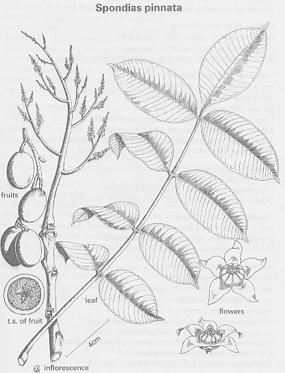

|
ECONOMICALLY
IMPORTANT PLANTS OF INDIA |
| Under-utilized Food and Fodder species and their wild relatives | Contributed by Ms.M.L Annapurna And Dr. Dhanapal, UAS, Bangalore |
Spondia pinnata (Linn. f.) Kurz
Taxonomic Details

----- Correct Name
----- Classification
----- Synonyms
----- Common Names
Other Biological Details
----- Habit and Habitat
----- Diagnostic Features
----- Reproductive Biology
---------- Breeding System
---------- Phenology
---------- Pollinators
---------- Seed Biology
----------Seed Germination
------ Cultivation
----- Major Pests and Diseases
Economic Potential and Uses
----- Parts Used
----- Uses
----- Harvesting Practices
----- Produce and Products
----- Chemistry
----- Processing Techniques
----- Other uses
----- Economic Potential to the
Country
----- Export Potential
Miscellaneous Information
Literature
The wild mango, though widely distributed deciduous and often dry forests, is nowhere abundant or gregarious in India. It grows in regions where maximum temperature in shade ranges from 38 to A and the absolute minimum from-1 to 16° and rainfall between 75 and 375 cm. or more. The tree light-demander but sensitive to frost. It coppices b is not known to produce root suckers.
BioticZone: Himalaya, Khasia hills, Konkan plain, Peninsular India, SubHimalayan
tracts, Temperate Western Himalaya, Tropical Asia, West Coast and Western Ghats.
Availability :
Misc: Bardez, Carchond forest, Chispana, Hewale, Jairampur to Nampong forest,
Namdapha, Jaldapara, Kakkabe, Kallur betta, Karulai, Nilambur, Kerude, Khondra,
Kudal, Kundalli, Matheran, Mirya dongar, Nana Randha, Nandprayag F. R. H., Near
Dawki, Pen, Ramghat, Regional Research Station, Brahmavar, Salkumar, Salt Range,
Satara, Sawantwadi, Sawarna, Taurenga, Thalichola, Nilambur and Velugaon.
Country: Asia, Burma, Hongkong, India, Malaya, Malayasia, Pakistan and Sri Lanka.
Zone: Central, East, Islands, North East, South and Westzone.
State: Andaman & Nicobar, Arunachal Pradesh, Bihar, Karnataka, Kerala, Madhya
Pradesh, Maharashtra, Meghalaya, Tamil Nadu, Uttar Pradesh and West Bengal.
District: Andaman, Bangalore, Belgaum, Bilaspur, Bombay, Chamoli, Champaran,
Changlang, Chikmaglore, Dakshin Kannada, Hassan, Jalpaiguri, Jowai, Kodagu,
Lohit, Malappuram, Mysore, Nasik, Palani, Raigad, Raigarh, Raipur, Shimoga,
Sindhudurg, Tirap and Uttar Kannada.
Taluk: Kudal and Sawantwadi.
Status :
DIAGNOSTIC
FEATURES REPRODUCTIVE BIOLOGY
A small, aromatic deciduous tree, up to 27 m. high and 2.5 m. in girth, with
a clear bole of 16 m.,
Bark thick, aromatic, smooth, gray-leaves imparipinnate, 20-60 cm. long: leaflets
5-11,' 22-28 cm. long, ovate-oblong, elliptic or elliptic-oblong' more or less
oblique with mango-like smell; flowers whitish or greenish white, polygamous,
in large, terminal panicles; drupes yellow-green or rich olive-green mottled
with yellow and black, smooth, ovoid, 4-7 cm. Joi seeds 1-3, one being perfect,
oblong-elliptic.
Breeding System :
Phenology :
The flowering occurs during February-April and in some places it will be between December-
July. Fruits
ripen during October-November.
Pollinators:
Seed Biology :
Seed Germination:
The stone easily germinates during the rainy season.
The stone easily germinates during the rainy season. The radicle, if not
covered or may be eaten by birds and insects. The plant can be propagated
either through seed or from cutting. Sowing the seeds directly in the field gives
better result than transplanting, provided the stones are covered will earth.
However, basket-raised seedlings transplant better for artificial regeneration,
sowing the seed in September is recommended. When the seedlings are c. 8 0 cm
they are carefully transplanted. The plants fruit in about 5 years. Planting
the saplings near water-channels c MAJOR PESTS & DISEASES
perennial streams is recommended. The tree is grown also for fencing and shade.
Pests:
Diseases:
Economic
Potential and Uses
Parts used:
Fruit,
wood, bark, root, tree, leaves and flowers.
<Harvesting
Practices
Produce and Products :
Chutneys, Stews,
Pickles and Jams, Wood- pulp, Paste, Decoction, Gum, Juice, Curry.
calorific value: 4,067 cal., 7,321 B.t.u.
The edible portion of the fruit gave, on analysis, the following values : moisture, 90.3; protein, 0.7: fat, 3.0; fibre, 1.0: carbohydrates, 4.5; and mineral matter, 0.5%; calcium, 36.0; phosphorus, 11.0: iron, 3.9; thiamine, 0.02; riboflavin, 0.02; nicotinic acid. ',. 0.3; and vitamin C, 21.0 mg./lOO g.; vitamin-A value, , 450 I.U./100 g. A sample of fruit contained sucrose ;;:<2.9%), glucose (1.7%), and fructose (1.8%). Iodine 1.'(0.45-0.61-mg./kg., dry wt.) is present.
Processing Techniques
Flora of Sindhudurg,Vol 1,Kulkarni B. G,1988,Botanical Survey of India